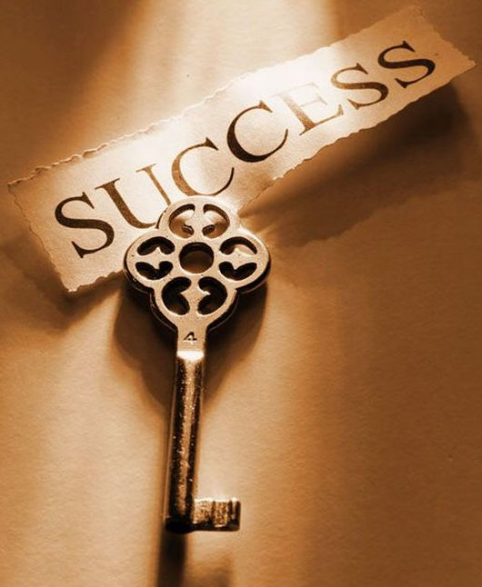
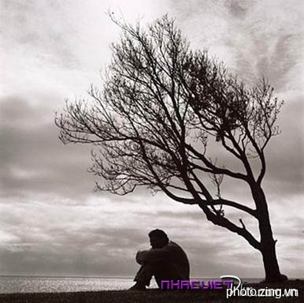

-
Buồn
Buồn, không biết vì sao tôi buồn... -
Đôi khi
Đã có lúc nào bạn thấy buồn?... Nhưng một điều rất đáng sợ là bạn không hiểu tại sao mình buồn
Tôi cũng vậy... và mỗi khi ấy tôi lại viết nguệch ngoạc lên đâu đấy "Tôi ơi đừng buồn nữa"; "Let's Smile"... Tôi không chắc nó sẽ làm bạn vui lên nhưng ấy cũng là một cách để phá vỡ chút không gian đã làm bạn "cảm thấy" buồn chán. Ít ra thì đấy cũng là một cách hay đấy chứ :) -
Hạnh phúc
Những lúc ta cảm thấy... -
Sẽ có một lần
“Hạnh phúc - Điều quan trọng nhất trong cuộc sống? Nếu người ta hỏi một người trong cơn đói, đó sẽ là thực phẩm. Với một kẻ nào đang lạnh, đó sẽ là hơi ấm. Và nếu một ai đang cam chịu cô đơn, chắc chắn đó sẽ là sự gần gũi với người khác”..
-

Thành công
Điều gì khiến bạn cảm thấy mãn nguyện. -
Thành công - Ai cũng cần?
Trong cuộc sống, ai cũng mong muốn có được thành công. Và để đạt được ước mơ đó, mỗi người trong chúng ta phải không ngừng nỗ lực học tập, rèn luyện và làm việc, cũng như vô số lần suy nghĩ, trăn trở để lựa chọn cho mình một hướng đúng đắn. Nhưng trong hành trình ấy, chỉ có một số ít người đạt được thành công, còn số khác thì không. Vì thành công không phải là một sự may mắn hay số phận mà đó chính là quả ngọt do sự cố gắng của một quá trình. Và con đường đến thành công không hề dễ dàng, chúng ta phải vượt qua rất nhiều khó khăn thử thách để có thể đến đích.
-

Thất bại
Thất bại = niềm đau. -
Hãy tự mình vượt lên...
Mỗi nghịch cảnh, mỗi thất bại và mỗi nỗi đau buồn đều chứa đựng một mầm mống lợi ích tương đương. Từ trước tới nay mọi người thường quen nhìn nhận đến khia cạnh u ám và tiêu cực của nghịch cảnh, thất bại hay đau buồn. Nhưng thưc ra mỗi nghịch cảnh, mỗi thất bại hay mỗi nỗi đau buồn đều có lơi ích của nó. Điều quan trong là phải biết nhìn nhận ra những lợi ích đó để tận dụng nó.
{kind=link}
{kind=link}
{kind=link}
{kind=link}